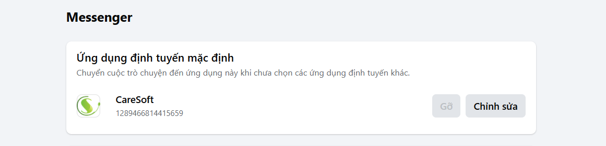
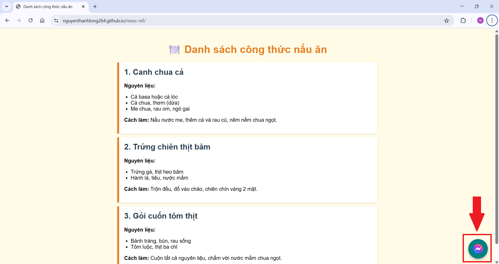
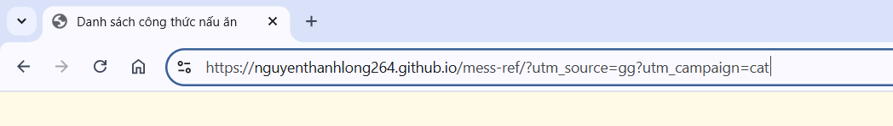
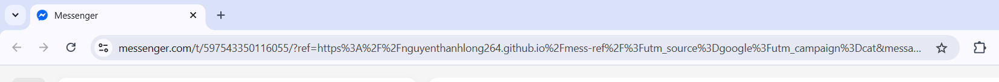

Tạo link chuyển sang cửa sổ trò chuyện Messenger và gửi kèm tham số ref là URL hiện tại để theo dõi nguồn gốc người dùng.
Chúng ta sẽ dùng trực tiếp link Messenger theo định dạng:
https://m.me/username?ref=tham-so
Bạn có thể tạo link Messenger bằng một trong hai cách sau:
https://m.me/yourpage
https://m.me/123456789012345123456789012345 bằng ID thật của trang)
Trong phần cài đặt của fanpage, vào Thiết lập trang → tìm Định tuyến cuộc trò chuyện trên Messenger và chọn Ứng dụng định tuyến mặc định.
Để sử dụng link m.me, bạn cần tạo một thẻ <a> có dạng:
<a href="https://m.me/{pageID hoặc username}">Nhắn tin qua Messenger</a>Nếu muốn gửi kèm tham số ref là đường dẫn hiện tại (giúp theo dõi người dùng đến từ trang nào), bạn có thể dùng ví dụ sau:
<a id="messenger-chat-link" href="#" target="_blank" style="position: fixed; bottom: 20px; right: 20px; z-index: 9999;
width: 60px; height: 60px; background-color: #008080;
border-radius: 50%; display: flex; justify-content: center;
align-items: center; box-shadow: 0 4px 8px rgba(0,0,0,0.3);">
<img src="https://upload.wikimedia.org/wikipedia/commons/b/be/Facebook_Messenger_logo_2020.svg"
alt="Messenger Chat" width="30" height="30" />
</a>
<script>
window.addEventListener('DOMContentLoaded', function () {
const chatLink = document.getElementById('messenger-chat-link');
const currentUrl = encodeURIComponent(window.location.href);
const pageID = '597543350116055'; // Thay bằng ID thật hoặc username
chatLink.href = `https://m.me/${pageID}?ref=${currentUrl}`;
});
</script>✅ Khi người dùng nhấn vào nút, họ sẽ được chuyển đến Messenger và bạn có thể biết họ đến từ trang nào nhờ tham số
ref.
Dưới đây là ví dụ 1 trang hiển thị nút chat Messenger cố định góc dưới bên phải trang:
Tôi đã điền thêm các thông số như utm_source, utm_campaign trong đường dẫn:
Sau khi ấn vào link (trường hợp này là bong bóng chat như ảnh 1), thì sẽ được dẫn qua messenger chat với chỉ số ref:
Sau khi người dùng ấn nút Bắt đầu thì ref sẽ được truyền vào
Chuyển sang trang ví dụ